Lab 01 - Fabric Inventory and Discovery¶
Physical Build¶
Its important to be familiar with the physical configuration of each node in your ACI fabric. A leaf, spine, or apic is a "Node" in your ACI fabric and the node numbering is important.
In our lab we have a Nexus 9336 Spine, two Nexus 9396 Leafs, and a single APIC-Server-M1.
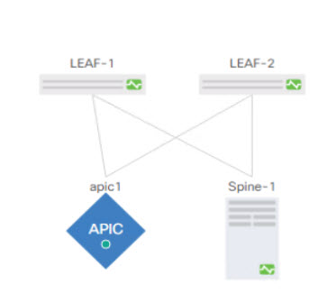
Hardware Overview¶
| Model | Name | View | Information |
|---|---|---|---|
| N9K-C9336PQ | Spine-1 |  |
Hardware Overview |
| N9K-C9372PX-E | LEAF-1 |  |
Hardware Overview |
| N9K-C9372PX-E | LEAF-2 | |
Hardware Overview |
| APIC-SERVER-M1 | apic1 |  |
This configuration is perfectly valid for a Lab but it is not valid for a production environment. The minimum physical fabric hardware for a production environment includes two spines, two leafs, and three APICs.
Fabric Turn Up¶
It is important to know that the initial turn up and device discovery and registration has already ocurred. You are accessing the lab after this step has been completed.
A fabric turn up is typically performed on site.
Physical Connectivity¶
- The management network is up and configured
- All the management interfaces of the spines and leafs are connected to the management network
- Optionally, all the console interfaces of the spines and leafs are connected to a terminal server
- Each leaf switch has a fabric uplink to each spine
- Each APIC has
- a CIMC connection to the management network
- a Managmenet connection to the management network
- Redundant 10G fabric uplinks
Logical Parameters¶
| Paramenter | Use | Lab Value |
|---|---|---|
| Pod Number | Numeric identifier for each ACI Pod<br>Default: 1 | 1 |
| TEP Pool | Default: 10.0.0.0/16 | 10.0.0.0/16 |
| TEP Vlan | Default: None | |
| Management Subnet/Mask | Default: 192.168.10.0/24 | 192.168.10.0/24 |
| Management Network Gateway | Default: None | 192.168.10.1/24 |
2019 Melbourne Cisco Live
How to Setup an ACI Fabric from Scratch - BRKACI-2004 - 2019 Melbourne Cisco Live
Explore the Cisco ACI GUI¶
Now that you are familiar with the physical components of the Lab, lets investigate the APIC GUI and the topology from the APIC controller.
Step 1¶
Connect to your Student PC. See the Getting Around section for details.
Step 2¶
From your Student PC, open a browser. Google Chrome is recommended for managing the APIC. https://192.168.10.1 or https://apic.dc.local Accept the security warning or create a security exception to access the GUI with the self signed certificate. Note that Secure HTTP (https) is required to access the APIC GUI by default. Insecure HTTP (http) must be explicitly enabled and is not recommended in a production environment.
Step 3¶
Login to the APIC.
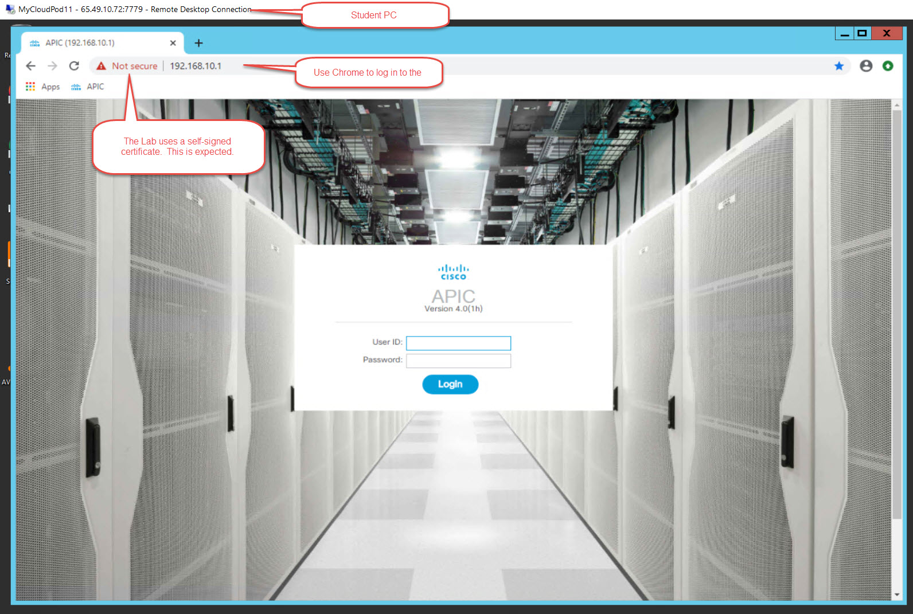
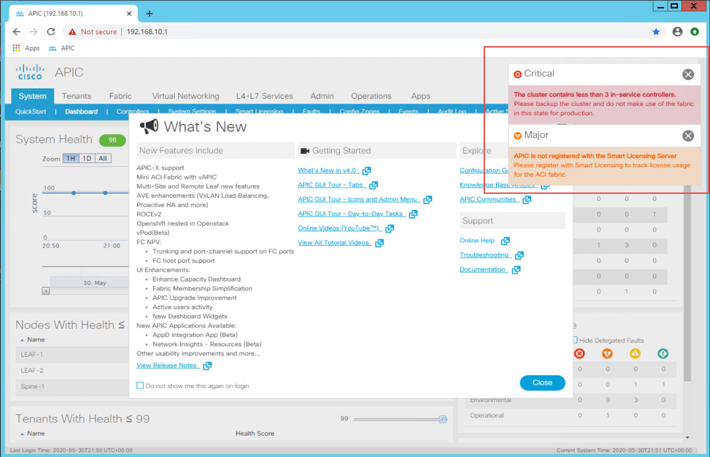
Note the warnings which will flash in the uppler right corner. You will see a Critical warning that the cluster does not contain 3 controllers. You may also see a Major warning regarding Licensing. This is expected in the Lab environment. Should you see these warning in a production environment, they must be corrected.
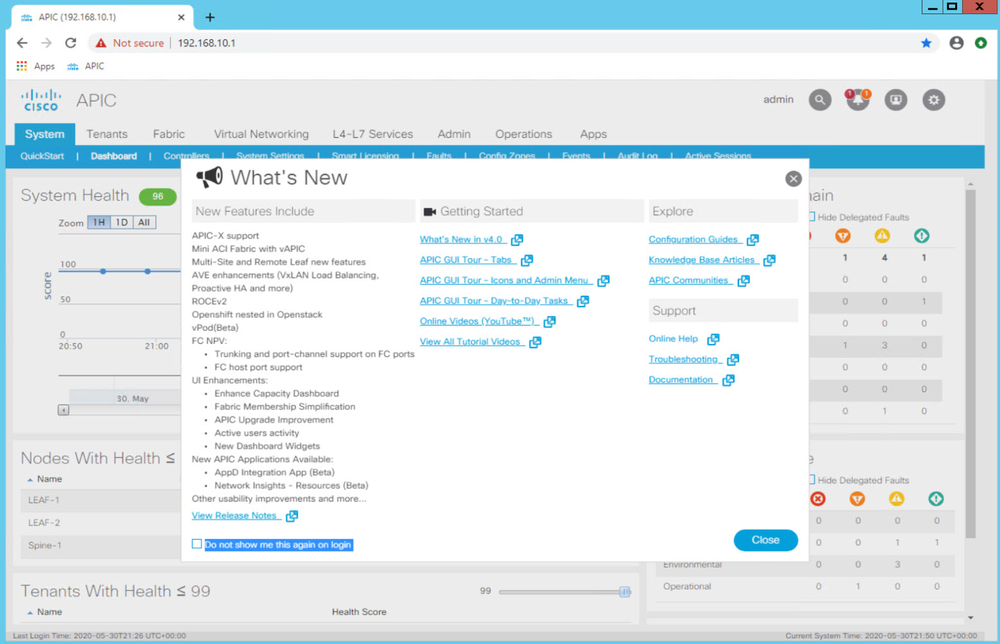
You will see the "What's New" dialog and the main APIC Dashboard behding the dialog.
Step 4¶
Skim through the What's New dialog and close it.
Step 5¶
Examine the the top-most section of the GUI interface. This top ribbon containing the main functional areas of the fabric (System, Tenants, Fabric, Virtual Networking, L4-L7 Services, Admin, Operations, Apps) is known as the Menu Bar.
Menu Bar¶
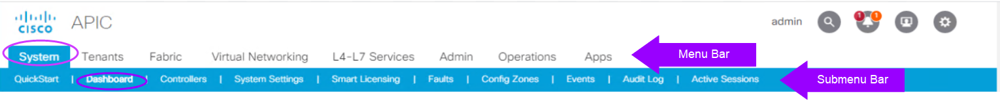
You will use it to navigate to the area of the ACI Fabric you need to view or update.
Notice the shading and highlighting to help orient you in the GUI. The Menu bar shows that we are in the Dashboard section of the System menu.
ACI GUI Menu Options
| Menu Headings/Tabs | Description |
|---|---|
| System | Upon login, the GUI defaults to the System Menu Dashboard which provides the health status of the system. From the System menu tab other settings and licensing options are available along with events and faults. |
| Tenants | The Tenants Menu provides access to all tenants configured in the fabric and their logical configuration objects. |
| Fabric | The Fabric Menu provides access to inventory details, Fabric Policies, and Access Policies. |
| Virtual Networking | The Virtual Networking Menu displays and configures the fabric Virtual Machine Managers (VMMs). |
| L4-L7 Services | The L4-L7 Services Menu displays and configures the fabric Virtual Machine Managers (VMMs). |
| Admin | The Admin Menu displays and configures administrative functions such as authentication, authorization, and accounting functions, scheduling policies, retaining and purging records, upgrading firmware, and controlling features such as syslog, Call Home, and SNMP. |
| Operations | The Operations Menu provides access to operational functions including:<br>- Visibility & Troubleshooting<br>- Capacity Dashboard<br>- EP Tracker<br>- Visualiztion |
| Apps | The Apps tab displays all the applications installed or uploaded to APIC. The tab allows an APIC administrator to upload, enable, upgrade, install, or uninstall a packaged application in APIC. |
Areas of the APIC GUI¶
The APIC or controller GUI has 4 main areas: - Menu Bar - Submenu Bar - Navigation Pane - Work Pane
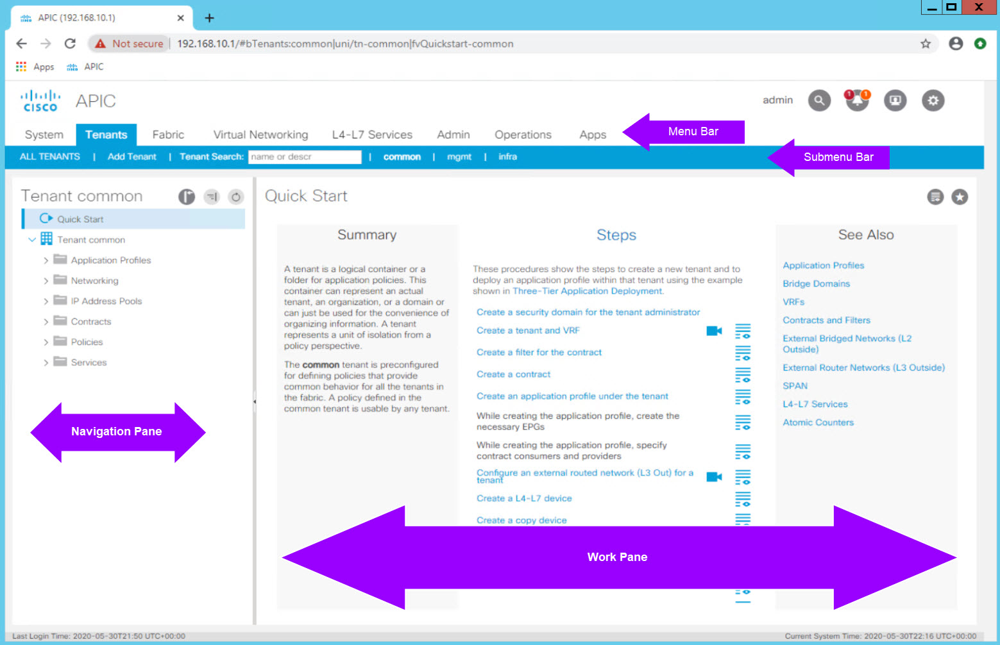 Select the Tenants menu. You will see a list of the default or pre-defined tenants which come with ACI "out of the box". Select the common tenant. You will see the standard tenants options listed collapsed in the Navigation Pane on the left side. If you select an option in the Navigation Pane, the objects pertaining to that selection are shows in the Work Pane to the right of the Navigation Pane. The Work Pane displays details about the option selected in the Navigation Pane. Fabric configuration via the GUI is typically performed in the Work Pane.
Step 6¶
Take some time to select each Menu Bar option and get comfortable moving around in the GUI. For the remainder of the Lab the following convention will be used to guide the Student in navigating the GUI:
Menu Bar Option > Submenu Option > Navigation Pane Option(s) > Work Pane Tabs
From where you are in the Tenants menu navigate to: System > Dashboard to get back to the Health Dashboard of the Fabric. Notice that when you select the *System Menu option, you will automatically go to the Dashboard by default.
GUI Tips¶
- Wherever there is a submit button and you are trying to make a change - click it. Some changes won’t require it so the inconsistency sometimes calls that into question.
- Refresh - sometimes your changes won’t appear until you do, you will see the little circular refresh button on most screens
- Hover over icons with your mouse for a few seconds to view the icon description
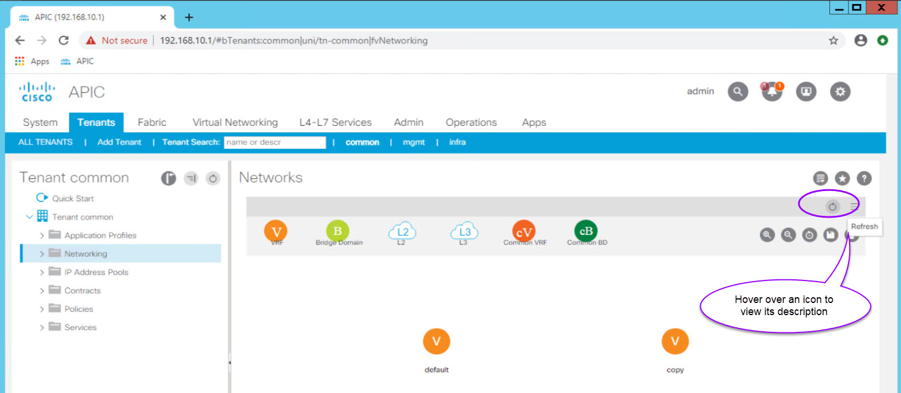
Exporing Fabric Inventory, Nodes, and Fabric Topology¶
Now that there is some familiarity with the GUI, lets validate the topology of the fabric.
Step 1 - View and Explore the Toplogy¶
Navigate to Fabric > Inventory > Topology. The Work Pane opens into the Summary tab. To view the topology diagram, click on the Topology tab in the Work Pane. Note that the full path would be shown as:
Fabric > Inventory > Topology > Topology
Navigation paths like this are not uncommon in the ACI GUI. Recall that the format we will follow throughout the lab is:
Menu Bar Option > Submenu Option > Navigation Pane Option(s) > Work Pane Tabs
From the Topology tab in the work pan verify that the displayed topology reflects the lab design. - One Spine - Two Leaf switches - One APIC server dual-homed to both leaf switches
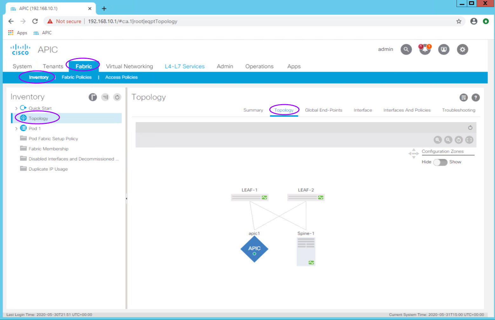
Note: You will see the same topology view if you go to
Fabric > Inventory > Pod 1 > Topology
Device Summary via hover over device icon¶
Hover over each device icon for a very useful physical summary of the device. 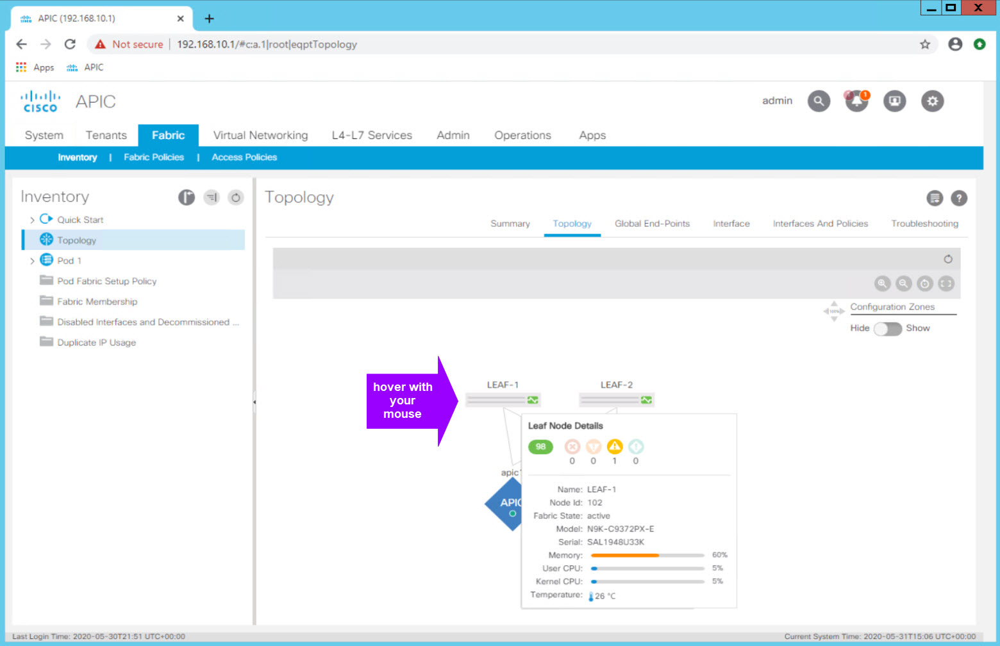
Device Connectivity¶
Double click each device icon to view a list of connections. 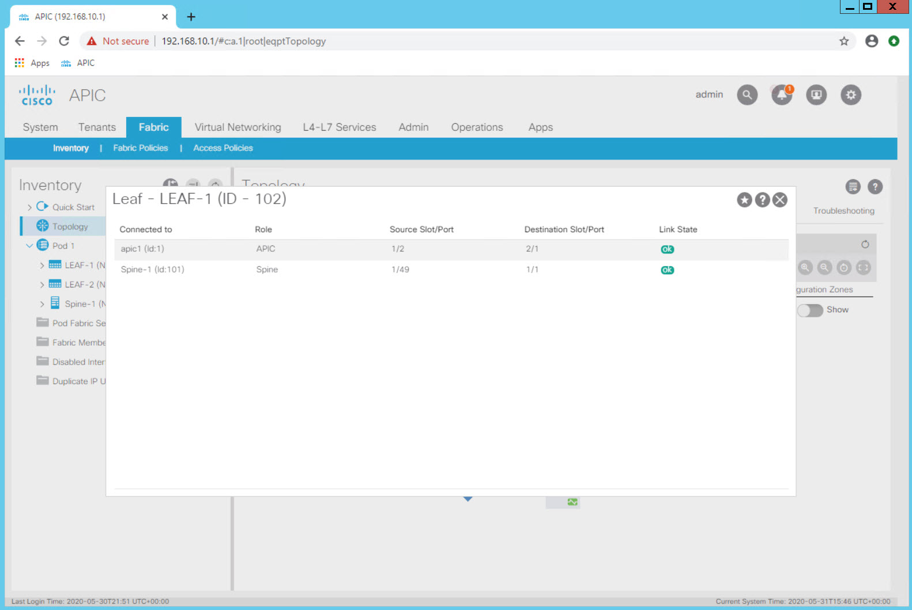
Step 2 - View and Explore the Inventory¶
Navigate to Fabric > Inventory > Fabric Membership. Here you will see the fabric inventory including serial number, Pod, Node ID, Model, Role, Fabric IP, and Status.
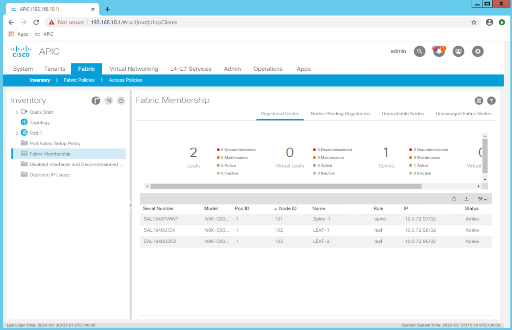
The Pod, Node ID, and Role are defined during fabric discovery. You will notice that the IP comes from the TEP Pool that was provided during the apic intitial confirguration.
Notice the additional tabs including Nodes Pending Registration. This tab is used to register new devices to the fabric.
Double clicking on one of the device rows will display a dialog with device details.
Examine each device and note the details that are available including certificate information.
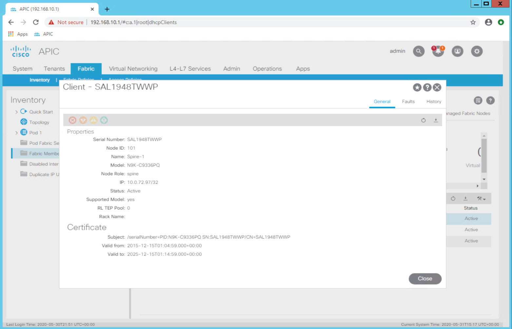
Skills you should have after Lab Completion¶
After completing this labs you should: - be familiar with the hardware components of the lab - be familiar with the APIC GUI, its high level menu options, and how to navigate around - be able to explore the fabric inventory and determine model, status, and connectivity information - understand where to go to add new devices to the fabric